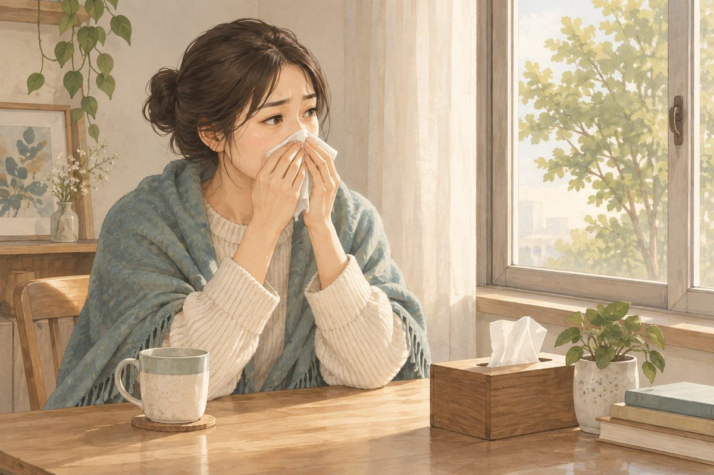
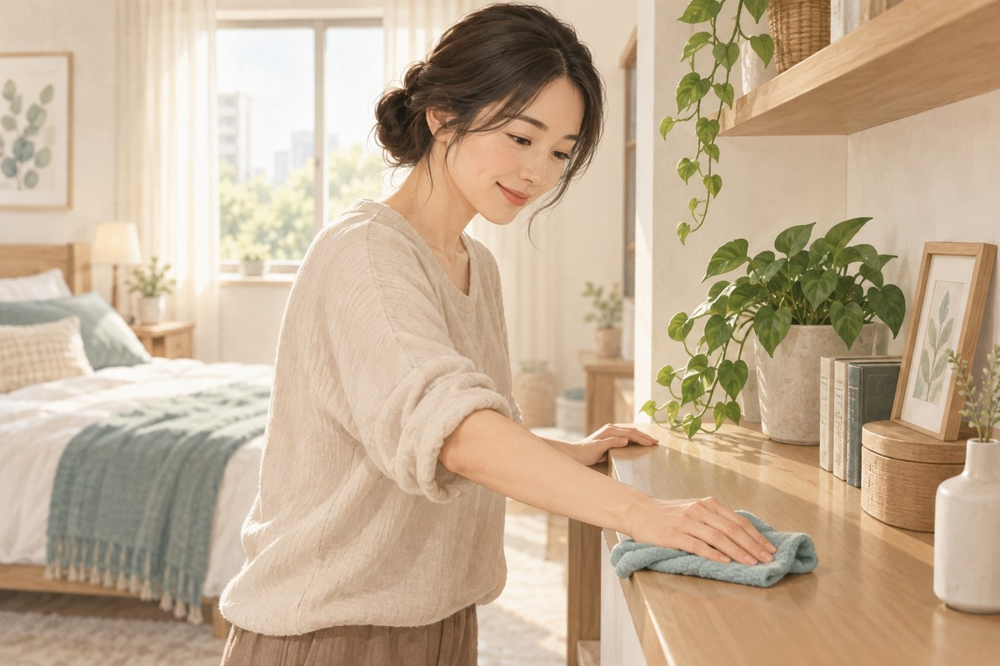

鼻過敏
鼻過敏常見的表現包括連續打噴嚏、流清鼻水、鼻塞與鼻子發癢。有些人只在季節變化時發作，也有人整年反覆不舒服。除了過敏原，睡眠、空氣品質、工作環境與是否合併氣喘，也會影響症狀。
你是否有這些困擾？
- 早上起床後連續打噴嚏、流鼻水
- 換季、進入冷氣房或整理寢具時症狀加重
- 鼻塞影響睡眠，經常張口呼吸
- 鼻子、眼睛或喉嚨反覆發癢
- 鼻涕倒流，常清喉嚨或夜間咳嗽
- 症狀反覆發作，已影響上課、工作或運動

鼻過敏是什麼？
過敏性鼻炎是鼻腔接觸特定過敏原後產生的發炎反應。常見誘發物包括塵蟎、花粉、黴菌與動物皮屑。症狀可隨季節出現，也可能因室內過敏原而全年反覆。
鼻塞、流鼻水與打噴嚏不一定都是過敏。感冒、鼻竇炎、藥物、鼻腔結構及其他鼻部問題也可能有相似表現，需要依發作時間、分泌物、發燒、疼痛與檢查結果區分。
常見表現
打噴嚏、流清鼻水與發癢
接觸過敏原後可能連續打噴嚏，鼻水多而清，並伴隨鼻子、眼睛或喉嚨發癢。若眼睛紅癢、流淚，也可能同時有過敏性結膜炎。
鼻塞與睡眠不佳
鼻黏膜腫脹會讓呼吸不順，晚上可能張口呼吸、打鼾或睡眠中斷。長期睡不好也會讓白天注意力與精神受到影響。
鼻涕倒流與咳嗽
分泌物往後流到咽喉時，可能出現喉嚨異物感、反覆清喉嚨或夜間咳嗽。若同時喘鳴、胸悶或運動後容易咳，需要評估是否合併氣喘。
常見相關因素
- 塵蟎、花粉、黴菌與動物皮屑
- 溫差、冷空氣與空氣污染
- 菸味、香水、清潔劑及其他刺激性氣味
- 寢具、地毯、絨毛玩具或潮濕環境
- 家族過敏體質
- 氣喘、濕疹或其他過敏疾病
- 睡眠不足與長期暴露於誘發環境
哪些人需要更完整評估？
症狀整年反覆、影響睡眠與工作，或原本使用的方法逐漸失效時，應接受評估。兒童若長期鼻塞、張口呼吸、睡眠不安或注意力受到影響，也需要確認鼻部與呼吸狀況。
若同時有氣喘、反覆喘鳴、胸悶或運動耐受度下降，更要一起管理上下呼吸道問題。
可以先記錄什麼？
記錄症狀出現的季節與時段，以及是否和起床、打掃、換床單、接觸寵物、進入冷氣房或戶外活動有關。也可記錄鼻塞左右側、鼻水型態、眼睛症狀、咳嗽與睡眠情況。
若正在使用鼻噴劑、抗組織胺或其他過敏藥物，請記下名稱、使用方式與效果，方便醫師判斷是否需要調整。
什麼情況需要盡快就醫？
若出現呼吸困難、明顯喘鳴、胸悶、臉部或喉嚨腫脹，應立即就醫。鼻部症狀合併持續高燒、劇烈臉部疼痛、眼周腫脹、視力變化或意識異常，也需要儘快檢查。
反覆流鼻血、單側鼻塞持續惡化、分泌物有明顯惡臭，或一般治療無法控制症狀時，也應進一步評估。
連邦中醫如何評估鼻過敏？
醫師會先了解打噴嚏、鼻水、鼻塞與發癢的時間軸，再詢問季節、居住環境、寢具、工作暴露、睡眠與是否合併咳嗽、喘鳴或胃腸不適。脈診辨證會與問診一起使用，評估目前身體狀態與適合的調理方向。
若懷疑氣喘、鼻竇炎、嚴重睡眠呼吸問題或其他鼻腔疾病，會建議接受相應檢查，不以過敏體質解釋所有鼻塞。
中醫診療方向
中醫會依鼻水的清稀或黏稠、鼻塞時間、怕冷怕熱、口乾、疲倦、消化與脈象辨證。常見方向包括：
肺氣不足、衛外不固
遇到冷風或溫差就容易打噴嚏、流清鼻水，並可能容易感冒、怕風或精神較弱。治療方向以益氣固表、宣通鼻竅為主。
脾氣不足、痰濕停聚
鼻塞反覆、分泌物較多，並伴隨疲倦、食慾不佳、腹脹或排便偏軟時，會評估健脾化濕、通利鼻竅的方向。
肺經鬱熱或兼有熱象
鼻黏膜容易腫脹，分泌物較黏，並伴隨口乾、咽喉不適或怕熱時，治療會依表現採取清宣肺熱、通鼻竅等方向。
證型可能隨季節、感染與生活狀態改變，不能只依鼻水顏色自行判斷。
連邦中醫的治療方式
問診與脈診辨證
整理症狀時段、誘發環境、睡眠與呼吸道表現，再配合脈象判斷主要證型與兼證。
單味藥組方
依當次鼻塞、鼻水、眼癢、咳嗽及整體狀況選擇藥味，回診時比較發作頻率、睡眠與環境暴露後的反應再調整。
需要時搭配針灸
可依鼻塞程度、頭面部緊繃與患者接受度評估針灸。若原本使用鼻噴劑、氣喘吸入藥物或其他處方藥，不應自行停藥。
日常照護
- 找出並減少明確誘發物，不需盲目移除所有生活用品
- 定期清潔寢具並保持室內乾燥通風
- 避免菸味、強烈香味與粉塵刺激
- 花粉較多的季節，戶外活動後可更換衣物並清潔臉部
- 鼻噴劑依正確方向與醫囑使用，不自行長期增加次數
- 有喘鳴或胸悶時，依氣喘治療計畫處理並儘快評估

常見問題
鼻過敏可以用中醫治療嗎？
可以由醫師評估是否適合。中醫會依發作時間、鼻水與鼻塞型態、誘發環境、睡眠及整體體質安排治療，並追蹤症狀頻率與日常影響。
每天早上打噴嚏就是鼻過敏嗎？
不一定。塵蟎與溫差常在早晨誘發症狀，但感冒、鼻竇問題與其他鼻部狀況也可能相似，需要依持續時間和伴隨症狀判斷。
鼻過敏和氣喘有關嗎？
兩者可能同時出現。若鼻部症狀之外還有喘鳴、胸悶、夜咳或運動後咳嗽，應進一步評估呼吸道狀況。
鼻噴劑可以一直使用嗎？
不同鼻噴劑的作用與使用限制不同。應確認成分並依醫師或藥師指示使用，不要自行把短期通鼻塞噴劑當作長期治療。
換季前才需要調理嗎？
不一定。治療時間要看症狀是否季節性、誘發環境與發作頻率。全年鼻塞的人也需要先找出持續刺激來源與其他可能原因。
🏥 讓專業團隊成為您的健康後盾
就診前可先記錄症狀開始時間、最明顯的時段、誘發情境與伴隨症狀，並攜帶目前用藥及檢查資料。
105 臺北市松山區南京東路四段69號1樓